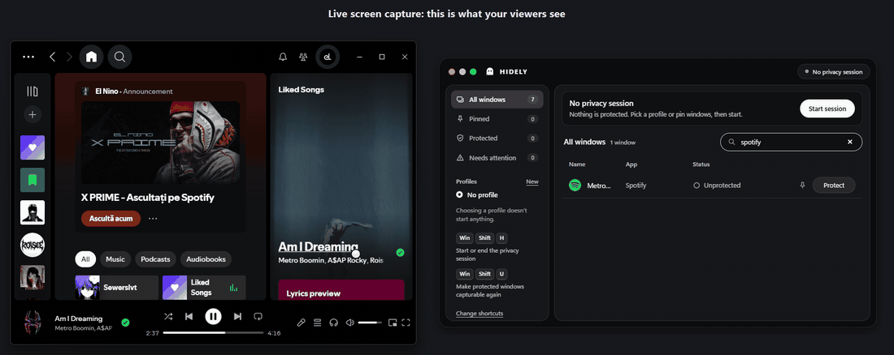

Share your screen.
Keep the rest to yourself.
Hidely keeps the windows you pick out of screen shares, streams, recordings and screenshots. They stay right there on your monitor. Your viewers just don't get them.
Free and open source · Windows 10 (2004+) and 11 · v0.4.0
- Night Drivemusic
- Vault: passwordsvault
- Direct messageschat
Try it: press Protect or Unprotect, then look below.
Your screen compared with what viewers see
An illustration. Drag the divider, or use the arrow keys on it. The real thing is below.
The real thing, recorded
This is an actual screen recording made on Windows 11. Hidely sits on the right. Press Protect on Spotify and it disappears from the recording, while it kept playing on the monitor the whole time. Press Unprotect and it is back.

Made for the moment you hit “Share”
- Streaming
- Keep DMs, stream keys and notifications off stream, even when you alt-tab into them live. Protect your chat app once and it stays off the broadcast.
- Meetings and classes
- Save a profile with your password manager and messages. Start a session before the call and anything those apps open stays out of the share, too.
- Developers
- Keep a terminal full of tokens next to the slides. Script it with
hidely-cli, or read the 150 lines that do the work.
How it works
Windows can leave a window out of every capture with one documented call,
SetWindowDisplayAffinity(hwnd, WDA_EXCLUDEFROMCAPTURE). The catch: it only
works from inside the app that owns the window.
- Make the call from inside the app. Hidely writes a 36-byte stub into the target app (20 bytes for 32-bit apps), runs it once, and frees it. No DLL stays behind and nothing is patched.
- Don't trust "it worked". Hidely reads the setting back from Windows. Only if Windows agrees does the window show Protection applied.
- Always put it back. Ending a session or quitting makes every window capturable again. If Hidely is killed, the next start restores them.
; runs in the target app, then freed
sub rsp, 28h
mov rcx, hwnd
mov edx, 11h ; WDA_EXCLUDEFROMCAPTURE
mov rax, SetWindowDisplayAffinity
call rax
add rsp, 28h
ret ; BOOL -> exit codePrivate tabs, too
Capture can only leave out whole windows, so the Hidely extension for Chrome and Edge watches which tab is in front. Switch to a tab or site you marked private and that browser window drops out of the share. Switch away and it comes back.
It talks only to the Hidely app on your computer. No network requests.
What's tested, honestly
Confirmed
- Zoom, Microsoft Teams, Discord and Google Meet
- OBS Studio
- Chrome, Edge and Firefox screen sharing
- Snipping Tool and Print Screen
- Windows' own capture methods: GDI, Desktop Duplication, Windows Graphics Capture
- 32-bit and 64-bit apps
Not checked yet
- Windows 10
- Other versions of each app than the one checked
- Help test one in ten minutes
Won't work
- Games with anti-cheat block it. Don't use it there.
- It only affects capture, not Task Manager or your network.
- A new window can be seen for a moment before it's protected.
See what your viewers see
Share your screen with this page and it plays that capture straight back to you. A window protected with Hidely should be missing from the preview, even though you can still see it on your monitor. The capture never leaves this page.
Nothing is being captured.
Your shared screen will appear here.
- Press Open a test window. A small yellow window with a clock appears. It has nothing private in it.
- Press Start screen share and pick Entire screen.
- In Hidely, press Protect next to "Hidely test window" and wait for Protection applied.
- It should still be on your monitor and gone from the preview. Unprotect it and it comes back.
This checks the browser's own capture only. Zoom, Teams and OBS capture in their own ways, so check those in their own preview too. If the window stays visible, tell us.
Questions
Can I hide one window from a screen share and still see it myself?
Yes. Windows has a setting that leaves a window out of screen capture. Hidely turns it on for the windows you pick, then checks with Windows that it took before it says so.
Does it work with Zoom, Teams, Discord or OBS?
Yes, in the versions checked. Zoom, Teams, Discord, Google Meet, OBS, Firefox, Chrome and Edge all left the protected window out on Windows 11, and so did Snipping Tool and Print Screen. Apps change how they capture between versions, so the compatibility record lists each version, and the test above lets you check your own setup.
Is anything still visible to viewers?
Captures still draw the mouse pointer, so Hidely keeps it a plain arrow over protected windows. A window that just opened, or a private tab you switched to, can be seen for a moment before it's protected.
Why does Windows warn me when I install it?
The installer isn't code-signed yet, so SmartScreen shows "Windows protected your PC". Choose More info, then Run anyway. Some antivirus may flag it too, because writing into another app is also what malware does. The code is open so you can check.
Is it free? Does it track me?
Free and open source under the MIT licence. No account, no analytics, nothing sent anywhere. See the privacy policy.